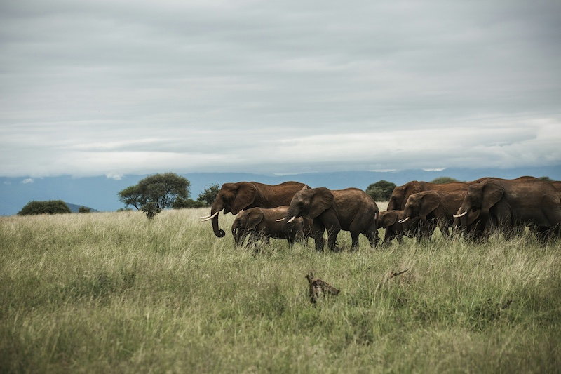
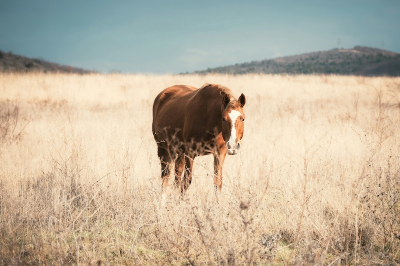
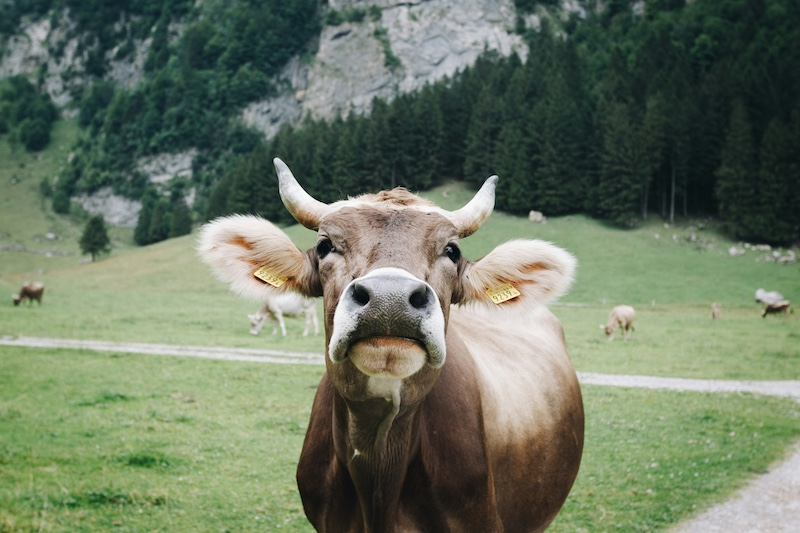

Animal Wisdom: Uncover Life Lessons from Elephants, Horses, Cows, and Cats
Discover the wisdom hidden in the natural world. From the gentle giants of the savanna to the everyday charm of our feline friends, animals teach us valuable life lessons about resilience, trust, and the beauty of simplicity. Here, we explore how their behaviors and instincts can inspire us to live better, more mindful lives.
🐘 ELEPHANTS - Strength in Unity

Elephants remind us of the importance of family and community. These gentle giants travel in herds, supporting and protecting each other, especially the young and the elderly. Their strong social bonds show us that we are stronger together, and that leaning on loved ones during challenging times is a sign of true strength.
EMPATHY. Elephants are known for their deep empathy and emotional bonds with each other. They mourn the loss of herd members and show compassion towards those in distress, teaching us the importance of understanding and caring for others' feelings.
TEAMWORK. Elephants work together to protect their young and navigate challenging environments. Their cooperation in the wild shows us that we can achieve more when we collaborate and support each other.
MEMORY. Elephants are famous for their exceptional memory, which helps them navigate vast landscapes and remember places with water or food. This teaches us the value of learning from the past to guide our future decisions.
🐎 HORSES - Freedom and Focus

Horses embody both freedom and discipline. They can run wild with incredible speed, yet they are also known for their focus and sensitivity when trained. This balance teaches us that while it's important to pursue our passions and embrace freedom, channeling our energy with purpose and focus can lead us to achieve great things.
RESILIENCE. Horses can endure long distances and challenging terrains, reminding us of the importance of perseverance and stamina when facing difficulties in life.
ADAPTABILITY. Horses thrive in a variety of environments, from wild plains to farms and ranches. Their ability to adjust to different surroundings teaches us to be flexible and embrace change.
MINDFULNESS. Horses are highly aware of their surroundings, which makes them sensitive to their environment and the emotions of others. This mindfulness encourages us to be present and attuned to the world around us.
🐄 COWS - Patience and Contentment

Cows, with their calm demeanor, remind us of the power of contentment. They spend their days grazing, moving through life at a steady pace, and finding satisfaction in the simple things. Their presence teaches us that slowing down and appreciating the little moments can bring peace and fulfillment.
PATIENCE. Cows spend a lot of time grazing and resting, showing us that patience is key to achieving a balanced and peaceful life. Their slow pace is a reminder that not everything needs to be rushed.
NURTURING. Cows are known for their gentle nature and care for their calves, demonstrating the importance of nurturing relationships and providing care to those around us.
GRATITUDE. Cows find satisfaction in the simple act of grazing, teaching us to appreciate the little things in life and find joy in everyday routines.
🐈 CATS - Independence and Curiosity
Cats are known for their independent nature and curiosity. They explore their surroundings with a sense of adventure, unafraid to go their own way. Their confidence in being alone and exploring new things teaches us the value of trusting ourselves, following our instincts, and finding joy in life's little mysteries.
SELF-RELIANCE. Cats are independent creatures who are comfortable being on their own. They teach us to trust ourselves and find strength within, reminding us that it's okay to be self-sufficient.
CURIOSITY. A cat’s curiosity drives them to explore new places and things without fear. This adventurous spirit inspires us to be open-minded and embrace new experiences with enthusiasm.
RESTFULNESS. Cats know when to slow down and rest, often taking naps throughout the day. They remind us that rest is an important part of life and that taking breaks can help us recharge.